Contents
- 1 Introduction
- 2 Multipage TABLEs
- 3 Tables in multiple columns
- 4 Designing complex TABLEs
- 5 TABLEs with old table syntax
- 6 Get current row/column number
- 7 An alignment issue
- 8 Footnotes in TABLEs
- 9 Settings for multiple TABLEs in a single page
- 10 Creating tables from CSV data (Comma Separated Values)
Introduction
The preferred way to typeset tables is to use what are called “natural tables” (also known as “automatic tables” or “HTML tables”). They are especially suited for XML conversions. See the enattab.pdf manual for many examples.
To place a table use:
-
\placetable{Caption} {\bTABLE \bTR \bTD One \eTD \bTD two \eTD \eTR \bTR \bTD One \eTD \bTD two \eTD \eTR \eTABLE}
A more elaborate example:
-
This is our red-coloured table. \setupcolors[state=start] \setupTABLE[row][odd][background=color,backgroundcolor=red, width=.2\textwidth] \bTABLE[split=yes] % allow splitting over page boundaries \bTR \bTD[nr=3] 1 \eTD \bTD[nc=2] 2/3 \eTD \bTD[nr=3] 4 \eTD \eTR \bTR \bTD 2 \eTD \bTD 3 \eTD \eTR \bTR \bTD 2 \eTD \bTD 3 \eTD \eTR \bTR \bTD[nc=3] 1/2/3 \eTD \bTD 4 \eTD \eTR \bTR \bTD 1 \eTD \bTD 2 \eTD \bTD 3 \eTD \bTD 4 \eTD \eTR \eTABLE
- 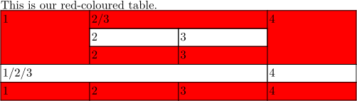
Note that every element must use \b ... \e.
Willi Egger wrote a My Way how he set a typesetter's lead type case: Use of natural tables
Multipage TABLEs
Try to divide your table into...
- \bTABLEhead (table header, can repeat after page breaks)
- \bTABLEnext (alternate table header on following pages)
- \bTABLEsection (subtitle that also can repeat after page breaks)
- \bTABLEbody (table body)
- \bTABLEfoot (table footer)
and \setupTABLE[split=yes] or [split=repeat]
see also tabl-ntb.mkiv
If you must split a natural table over several pages, you can simply do this by adding \setupTABLE[split=yes] to your TABLE definition. Another way is to define it right at the TABLE start by adding the parameter [split=yes] (see example). However, \startlinecorrection can lead to unpredictable vertical spaces between rows [1].
In this case the table head (all between \bTABLEhead and \eTABLEhead) is printed only once at the beginning of the table. But if you use [split=repeat], it is printed on top of every new page, that contains parts of your multipage table. Please take account of the fact that the head cells are enclosed by \bTH and \eTH (and not \[be]TD).
If you want to use an alternative table header for all following pages, you can do this by defining an additional header. Just add the second header between \bTABLEnext...\eTABLEnext, right after your normal head definition. Now every additional page of the multipage table starts with the next table head.
The table foot is declared between \bTABLEfoot and \eTABLEfoot. It defines the concluding row of your natural table.
Beware: Split tables often begin not on the page (or in the column, if you use them) where they could start, but on/in the next one. This is a known limitation due to the complicated calculation of remaining space on the page.
That won’t become better before this calculations are newly written in Lua. (Said Hans on 2010-09-24.) And it became better for LMTX, in 2021/2022.
The following standalone example deals with all the mentioned aspects of natural tables. Just copy&paste it as a starting point for further experiments...
-
\starttext \setupcolors[state=start] % setup for all cells \setupTABLE[r][each][style=\tfx\it, align=center] % setup table head \setupTABLE[r][first] [background=color, backgroundcolor=yellow] % setup table footer \setupTABLE[r][last] [style=bold, background=color, backgroundcolor=green] \bTABLE[split=repeat,option=stretch]% head on every page, stretch columns % % IMPORTANT: use \bTH ... \eTH to enclose the head|next cells \bTABLEhead \bTR \bTH head1 \eTH \bTH head2 \eTH \bTH head3 \eTH \eTR \eTABLEhead % \bTABLEnext % setup for next table head \bTR [background=color,backgroundcolor=cyan] \bTH next1 \eTH \bTH next2 \eTH \bTH next3 \eTH \eTR \eTABLEnext % % the table body (main part) % \bTABLEbody % \dorecurse{100}{% 100 rows \bTR \bTC body body body body body \eTC \bTC body body body body body \eTC \bTC body body body body body \eTC \eTR }% % \eTABLEbody % % the table foot % \bTABLEfoot \bTR \bTC foot1 \eTC \bTC foot2 \eTC \bTC foot3 \eTC \eTR \eTABLEfoot % \eTABLE \stoptext
- 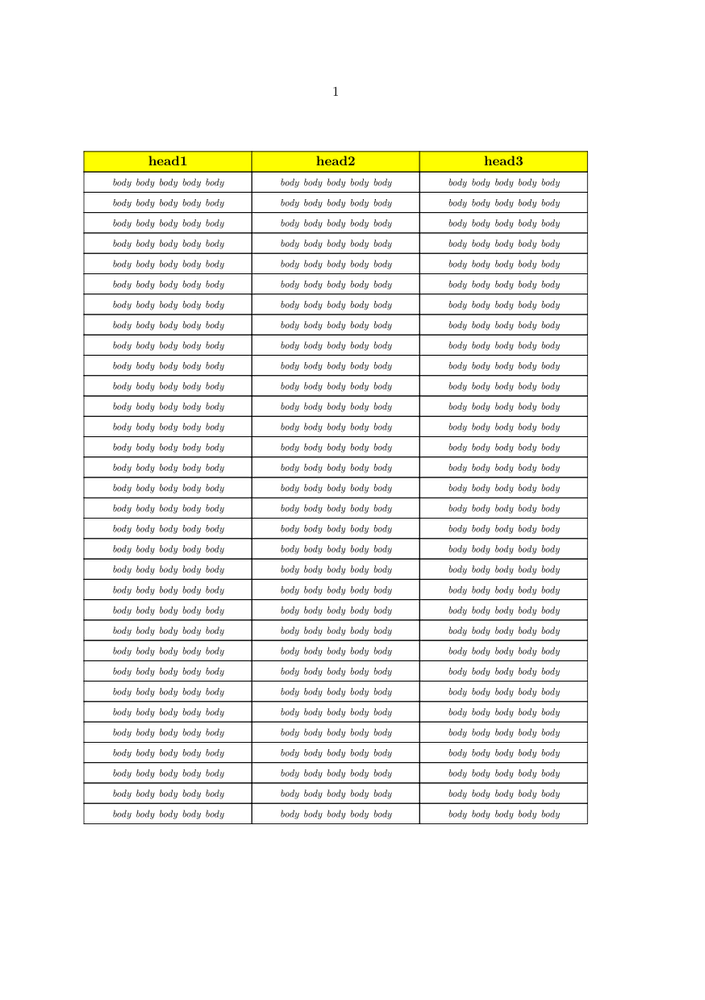
Changing split location
Sometimes in multipage tables you have cells that have to stay together:
\bTABLE[split=yes] \dorecurse{10}{\bTR \bTD xxx \eTD \eTR} \bTR[after=\page] \bTD yyy \eTD \eTR \dorecurse{10}{\bTR \bTD xxx \eTD \eTR} \eTABLE
Note that the table is split after the yyy row.
Headers with TABLEs
When you have a multi-page TABLE in the document (using either the split=repeat or split=yes options), and the (page) header text is also styled with a TABLE, the table header ends up getting crammed into the document header resulting in incorrect output. To alleviate this, \bTABLEnested and \eTABLEnested may be used as in the example below to ensure that table headers don’t get mixed up with the document header.
-
\setupheadertexts[\directsetup{headertable}] \startsetups [headertable] \bTABLEnested[option=stretch,frame=off] \setupTABLE[c][1][align=flushleft] \setupTABLE[c][2][align=flushright] \bTR \bTD Firstname Lastname \par 123, First street \par Ph: 1234567890 \par \eTD \bTD Company Name \par 123, First street \par Ph: 9876543210 \par \eTD \eTR \eTABLEnested \stopsetups \starttext \bTABLE[split=repeat, option=stretch] \bTABLEhead \bTR[style=bold]\dorecurse{5}{\bTH Header Col #1\eTH}\eTR \eTABLEhead \bTABLEbody \dorecurse{50}{\bTR\dorecurse{5}{\bTD Row #1 col ##1\eTD}\eTR} \eTABLEbody \eTABLE \stoptext
- 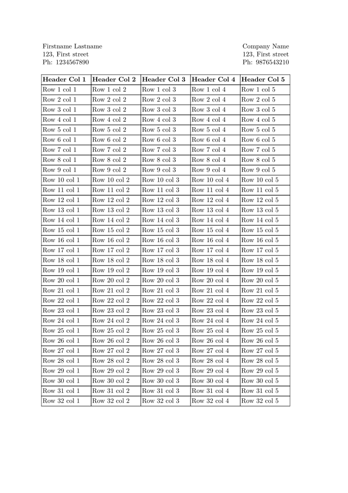
Compiling the above by using \bTABLE and \eTABLE instead of \bTABLEnested and \eTABLEnested in the setup for headertable one notices the need for the nested type.
Tables in multiple columns
... should just work (at least in your installation but not here...). See the following example.
\startcolumns[n=3] \bTABLE \dorecurse{21} {\bTR \bTD a\eTD \bTD b \eTD \eTR} \eTABLE \stopcolumns
Designing complex TABLEs
Everything is easy when a simple grid is enough. Unfortunately, this is not the case most of the time, tables tend to have information which should flow accross cell boundaries either vertically or horizontally. One of the reasons to use TABLE instead of the table environment is that TABLE provides an easy (relatively speaking, at least) way to make merged cells to both directions.
There are probably as many ways to design TABLEs as there are users, but a simple one to begin with is to start with a grid:
- 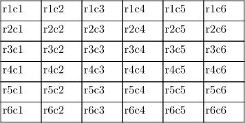
The desired table layout is then drawn onto this grid, and the top left corner cell of each cell in the final layout identified:
- 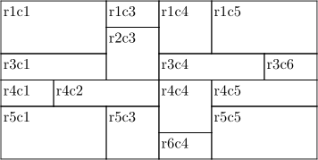
The cells are listed from left to right and up to down. Each larger cell is then given it size by using nc=... and nr=... parameters with \bTD. The code producing the table above is:
\setupTABLE[r][each][height=0.5cm] \setupTABLE[c][each][width=1cm] \bTABLE \bTR \bTD[nc=2,nr=2] r1c1 \eTD \bTD r1c3 \eTD \bTD[nr=2] r1c4 \eTD \bTD[nc=2,nr=2] r1c5 \eTD \eTR \bTR \bTD[nr=2] r2c3 \eTD \eTR \bTR \bTD[nc=2] r3c1 \eTD \bTD[nc=2] r3c4 \eTD \bTD r3c6 \eTD \eTR \bTR \bTD r4c1 \eTD \bTD[nc=2] r4c2 \eTD \bTD[nr=2] r4c4 \eTD \bTD[nc=2] r4c5 \eTD \eTR \bTR \bTD[nr=2,nc=2] r5c1 \eTD \bTD[nr=2] r5c3 \eTD \bTD[nr=2,nc=2] r5c5 \eTD \eTR \bTR \bTD r6c4 \eTD \eTR \eTABLE
Everything rectangular can be done with TABLE, as long as it can be fit in the grid. The grid does not have to be equidistant, and if its dimensions are omitted, the program will fit the data in. L-shaped or other complex cell shapes are not possible. Using them would be a bit odd, in any case, as alignment and text flow problems would be quite interesting.
Cell Addressing and Frames
The setup commands for TABLE do not seem to be very verbosedly commented. There are, however, a few shorthands, which are useful to understand. First of all, there are several ways to address cells. This is a brief summary of some of them:
\setupTABLE[r][(list of rows)][...] \setupTABLE[c][(list of columns)][...] \setupTABLE[(list of columns)][(list of rows)][...]
A list contains one or more numbers separated by commas. Word "last" is equivalent to the number of the last row or column. The complete list can be replaced by the word "each" to address all cells on the row/column.
Let us consider the following table:
\setupTABLE[c][each][align={middle,lohi},frame=off] \setupTABLE[r][2,3,4,5,6][height=1.0cm] \setupTABLE[r][2,4][topframe=on] \setupTABLE[c][1,2,3][rightframe=on] ...
In plain language the rows are interpreted as follows:
- Align each cell in each column (i.e. all cells) horizontally in the middle
and vertically in the middle (lohi), and remove all frames (borders)
- The height of rows 2 -- 6 is 1.0 cm
- Draw a line on top of rows 2 and 4
- Draw a line to the right side of columns 1 -- 3
In this case the table is slightly complicated, there are some split cells, as shown below:
\bTABLE \bTR \bTD \bf r1c1 \eTD \bTD \bf r1c2 \eTD \bTD \bf r1c3 \eTD \bTD \bf r1c4 \eTD \eTR \bTR \bTD r2c1 \eTD \bTD r2c2 \eTD \bTD[nr=2] r2c3 \eTD \bTD r2c4 \eTD \eTR \bTR \bTD r3c1 \eTD \bTD r3c2 \eTD \bTD r3c4 \eTD \eTR \bTR \bTD r4c1 \eTD \bTD r4c2 \eTD \bTD[nr=3] r4c3 \eTD \bTD[nr=3] r4c4 \eTD \eTR \bTR \bTD r5c1 \eTD \bTD r5c2 \eTD \eTR \bTR \bTD r6c1 \eTD \bTD r6c2 \eTD \eTR \eTABLE |
|
The cell numbering is well worth noting. It is very logical (upper leftmost part of a combined cell), but sometimes the results are surprising in the beginning.
The important point about cell numbering is that there is really a difference between "bottom border of row 3" and "top border of row 4". To illustrate this, let us change the frame setups:
\setupTABLE[r][2,4][topframe=on]
is changed to
\setupTABLE[r][1,3][bottomframe=on]
At first sight this is exactly the same thing. But...
- 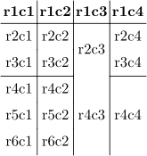
Where did the horizontal line in column 3 disappear? Nowhere. There is no row 3 in column 3, so there cannot be a frame under it. This problem can be overcome by using topframe and leftframe instead of bottom and right, as the cells below and to the right of a border have to exist.
However, this solution leaves the problem of bottom and rightmost borders. How to draw a line in the bottom of the table? Using \setupTABLE[r][6][bottomframe=on] will leave the gap in columns 3 and 4, and \setupTABLE[r][7][topframe=on] is not possible, as there is no row 7. The clever idea of using "last" instead of the row number (6) will fail, as "last" seems to behave exactly the same way as number 6.
One useful method is to switch on the borders cell by cell by adding \setupTABLE[3,4][4][bottomframe=on], i.e. draw a border under cells r4c3 and r4c4.
Column Offset/Gap
From the mailing list at 2005-11-09 by Vit Zyka, modified by Hans Hagen:
-
\setuppapersize[A5] % distance mechanism, per column (H) \start \setupTABLE[c][1][distance=2em] \setupTABLE[c][2][distance=3em] \bTABLE \bTR \bTD test \eTD \bTD test \eTD \bTD test \eTD \eTR \bTR \bTD[nx=2] test \eTD \bTD test \eTD \eTR \bTR \bTD test \eTD \bTD[nx=2] test \eTD \eTR \eTABLE \bTABLE[option=stretch] \bTR \bTD test \eTD \bTD test \eTD \bTD test \eTD \eTR \bTR \bTD[nx=2] test \eTD \bTD test \eTD \eTR \bTR \bTD test \eTD \bTD[nx=2] test \eTD \eTR \eTABLE \stop % distance mechanism, per table (V) \framed[offset=none]{% \setupTABLE[column][2][align=left] \setupTABLE[column][3][align=right] \bTABLE[columndistance=2cm,leftmargindistance=.3cm,rightmargindistance=.5cm] \bTR \bTH[nc=3] Table head\eTH \eTR \bTR\bTD[nc=2] AB\eTD\bTD C\eTD\eTR \bTR\bTD[nc=2,align=left] AB\eTD\bTD C\eTD\eTR \bTR\bTD[nc=2,align=middle] AB\eTD\bTD C\eTD\eTR \bTR\bTD A\eTD\bTD B\eTD\bTD C\eTD\eTR \bTR\bTD Aa\eTD\bTD Bb\eTD\bTD Cccc\eTD\eTR \bTR\bTD[nc=3,align=middle] ABC\eTD\eTR \eTABLE }
- 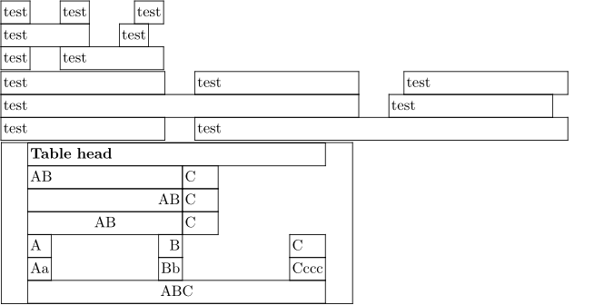
Row Offset/Gap
Rows, just like columns, can be drawn with a gap. As above, this can be achieved using:
\bTABLE[spaceinbetween=2cm] ... \eTABLE
A gap differs from an offset as can be seen when drawing cells using a background and/or a frame.
Note that offsets can be uniform [offset=dimension], or asymmetric [toffset=dimension,boffset=dimension,loffset=dimension,roffset=dimension]
Gaps for individual cells
One might want to produce gaps between specific rows and/or specific columns. This can be achieved using a white frame, for example, as shown in the following (incomplete) fragment:
\bTABLE[frame=off,columndistance=.5em] ... \bTR[topframe=on,framecolor=white,rulethickness=.5em] ... \eTR ... \eTABLE
Note that the rulethickness was set for the particular row and not for the entire table; otherwise, it would enter into the calculation of the cell dimensions (and interplay with other parameters such as columndistance).
More complicated situations, for example, mixing frames, colored cell backgrounds, special gaps, ..., can be achieved using MetaPost graphics as a background.
Make a cell bold
Drawing bold lines around a cell is done using the [rulethickness=dim] key on a cell. The thicker rules will offset the text inside the cell both downwards and sideways, so care should be taken that the cell's increased rulethickness is offset by an equal decrease in offset.
-
\setupTABLE[row][each][rulethickness=.25pt,offset=\dimexpr1mm+1.75pt] \bTABLE \bTR \bTD 1 \eTD \bTD 1 \eTD \bTD 2/3 \eTD \eTR \bTR \bTD 2 \eTD \bTD 2 \eTD \bTD 3 \eTD \eTR \bTR \bTD 2 \eTD \bTD[rulethickness=2pt,offset=1mm] 2 \eTD \bTD 3 \eTD \eTR \bTR \bTD 1 \eTD \bTD 1 \eTD \bTD 4 \eTD \eTR \bTR \bTD 1 \eTD \bTD 1 \eTD \bTD 2 \eTD \eTR \eTABLE
produces
- 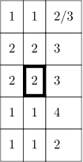
Cells with breaking lines
If you provide a width to a cell the lines will break.
-
\setupTABLE[c][2][width=3cm] \bTABLE \bTR \bTD 1 \eTD \bTD This is a very long line that should break. \eTD \eTR \eTABLE
produces
- 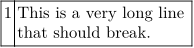
Rules
Example: an invoice with thick rules
-
\setuppapersize[A5] {\bfa Invoice} \switchtobodyfont[6pt] \blank \bTABLE \setupTABLE[frame=off,offset=1mm] \setupTABLE[row][*][height=7.25mm] \setupTABLE[column][1,2] [width=20mm,offset=\dimexpr1mm+2pt,align=flushleft] \setupTABLE[column][3,4,5][width=20mm,offset=\dimexpr1mm+2pt,align=flushright] \bTR[bottomframe=on, rulethickness=2pt,offset=1mm] \bTD\bf Date \eTD \bTD\bf Description \eTD \bTD\bf Quantity \eTD \bTD\bf Price \eTD \bTD\bf Total \eTD \eTR \bTR[bottomframe=on,rulethickness=.25pt] \bTD 05-01-2010 \eTD \bTD Element 1 \eTD \bTD 10.0 \eTD \bTD 6.00 \eTD \bTD 60.00 \eTD \eTR \bTR[bottomframe=on,rulethickness=.25pt] \bTD 05-01-2010 \eTD \bTD Element 2 \eTD \bTD 2.0 \eTD \bTD 3.00 \eTD \bTD 6.00 \eTD \eTR \bTR[topframe=on,rulethickness=2pt,offset=1mm] \bTD[nx=3] \eTD \bTD[align=flushleft] Subtotal \eTD \bTD 66.00 \eTD \eTR \bTR[offset=\dimexpr1mm+2pt] \bTD[nx=3] \eTD \bTD[align=flushleft] VAT 19\% \eTD \bTD 12.54 \eTD \eTR \bTR \bTD[nx=3] \eTD \bTD[align=flushleft] \bf Total \eTD \bTD 78.54 \eTD \eTR \eTABLE
- 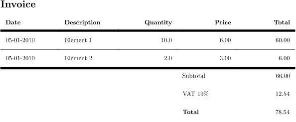
Rules with different thickness
There is only one value for all four borders. However, MetaPost can be used as a workaround until the separate "rulethickness" values are implemented.
The following example (mkiv only!) by Wolfgang Schuster shows a table using MetaPost for the rules:
-
\startuseMPgraphic{tableborders} draw leftboundary OverlayBox withpen pensquare scaled \frameddimension {leftrulethickness} ; draw rightboundary OverlayBox withpen pensquare scaled \frameddimension {rightrulethickness} ; draw topboundary OverlayBox withpen pensquare scaled \frameddimension {toprulethickness} ; draw bottomboundary OverlayBox withpen pensquare scaled \frameddimension{bottomrulethickness} ; clip currentpicture to OverlayBox leftenlarged (\frameddimension {leftrulethickness}/2) rightenlarged (\frameddimension {rightrulethickness}/2) topenlarged (\frameddimension {toprulethickness}/2) bottomenlarged (\frameddimension{bottomrulethickness}/2) ; setbounds currentpicture to OverlayBox ; \stopuseMPgraphic \defineoverlay[tableborders][\useMPgraphic{tableborders}] \startsetups tableborders \setupTABLE [ background={color,tableborders}, frame=off, backgroundoffset=0pt, leftrulethickness=\framedparameter{rulethickness}, rightrulethickness=\framedparameter{rulethickness}, toprulethickness=\framedparameter{rulethickness}, bottomrulethickness=\framedparameter{rulethickness}] \setupTABLE[row] [odd] [backgroundcolor=lightgray] \setupTABLE[row] [first][backgroundcolor=gray,bottomrulethickness=2pt] \setupTABLE[row] [last] [toprulethickness=2pt,bottomrulethickness=2pt] \setupTABLE[first][last] [leftrulethickness=2pt] \setupTABLE[last] [last] [rightrulethickness=2pt] \stopsetups \starttext \bTABLE \dorecurse{7}{\bTR\dorecurse{3}{\bTD#1-##1\eTD}\eTR} \eTABLE \blank \bTABLE[setups=tableborders] \dorecurse{7}{\bTR\dorecurse{3}{\bTD#1-##1\eTD}\eTR} \eTABLE \stoptext
gives:
- 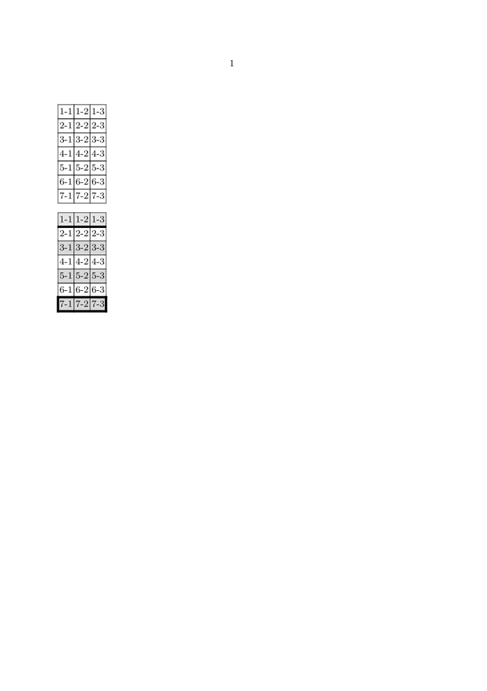
Thick bottom rules
This is a simplified version of the example above (corresponding mailing thread - TABLE: header with a thick bottom line).
-
\startuseMPgraphic{MP:thickBtm} draw bottomboundary OverlayBox withpen pensquare scaled \frameddimension{bottomrulethickness}; clip currentpicture to OverlayBox; setbounds currentpicture to OverlayBox; \stopuseMPgraphic \defineoverlay[OL:thickBtm][\useMPgraphic{MP:thickBtm}] \starttext \bTABLE \setupTABLE[align=middle] \setupTABLE[header][background={OL:thickBtm},bottomrulethickness=4pt] \setupTABLE[row][4][background={OL:thickBtm},bottomrulethickness=2pt] % \bTABLEhead\bTR\dorecurse{3}{\bTH#1\eTH}\eTR\eTABLEhead \bTABLEbody\dorecurse{6}{\bTR\dorecurse{3}{\bTD#1-##1\eTD}\eTR}\eTABLEbody \eTABLE \stoptext
Gives:
Diagonal rules
Sometimes a diagonal rule is required in the top left corner cell of a table to create two fields, one for the left column and one for the top row.
-
\startuseMPgraphic{DiagonalRule} rulethickness := \frameddimension{rulethickness}; drawoptions( withpen pencircle scaled rulethickness withcolor \MPcolor{\framedparameter{framecolor}}); pair leftcorner, rightcorner; leftcorner := (rulethickness, \overlayheight-rulethickness); rightcorner := (\overlaywidth-rulethickness, rulethickness); draw leftcorner -- rightcorner; \stopuseMPgraphic \defineoverlay [DiagonalRule] [\useMPgraphic{DiagonalRule}] \define[2]\DiagonalLabel{% \setuptabulate [after={\blank[\frameddimension{offset}]}] \starttabulate [|p|r|] \NC \NC #2 \NC\NR \NC #1 \NC \NC\NR \stoptabulate } \starttext \setupTABLE [row] [1] [width=2cm] \bTABLE \bTR \bTD [background=DiagonalRule] \DiagonalLabel{Foo}{Bar} \eTD \bTD Second \eTD \bTD Third \eTD \eTR \bTR \bTD Alpha \eTD \bTD Beta \eTD \bTD Gamma \eTD \eTR \eTABLE \stoptext
Gives:
This solution has (at least) one caveat: Because the first tabulate column is set in paragraph mode, it will eat up as much space as possible, in contrast to occupying as much space as necessary. That is why the width of the column has to be set explicitly.
Using character alignment
ConTeXt can align columns of numbers on a character (often a decimal point to align accounting data) automatically, removing the need to add fixed spaces into your document. For any such column you need to specify the character on which to align. You use the aligncharacter=yes parameter to set up character alignment, alignmentcharacter={.} to say what the character should be (in this case a full stop) and align=middle to set the overall alignment of the column.
\bTABLE \setupTABLE[column][1][align=right] \setupTABLE[column][2][alignmentcharacter={.}, aligncharacter=yes,align=middle] \bTR \bTH Category \eTH \bTH Data entry \eTH \eTR \bTR \bTD First \eTD \bTD 71.3 \eTD \eTR \bTR \bTD Second \eTD \bTD 43.7 \eTD \eTR \bTR \bTD Total \eTD \bTD 115 \eTD \eTR \eTABLE |
|

You'll note that the final line, because it has no . in the number, gets aligned under the right-hand side of the numbers. In most circumstances you would want such a number aligned with the left-hand set of digits. To so do, issue the following command in your preamble:
\chardef\characteralignmentmode=2
and now the table above will turn out like this:
- 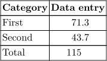
If there's no alignmentcharacter in the cell, the content will be aligned in the following way depending on the value of \characteralignmentmode:
| mode | . | ||
| 0 | centered | ||
| 1 | left in before | . | |
| 2 | right in before | . | |
| 3 | . | left in after | |
| 4 | . | right in after | |
Character alignment methods
MkIV (starting in late June 2014) offers two methods for character alignment. The first, "number", attempts to identify the number from preceding and trailing text, align the number on the separator and separately vertically align preceding or trailing text by paddind in-between the number and the preceding/trailing text. This looks very nice when the preceding or trailing text is all of the same width (for example, a currency symbol or % sign), but will mis-align if the preceding or trailing text has varying widths. Number mode is the default for most separators, but can be forced by specifying alignmentcharacter={number->-}.
Note that the below examples will not render properly until the wiki supports this feature; this file shows the expected output. File:character alignment methods example.pdf
-
% mode=mkiv \setuppapersize[A5] \bTABLE \setupTABLE[c][1,2,3,4][alignmentcharacter={number->.},aligncharacter=yes,align=middle] \bTABLEhead \bTR \bTH Same-Width Prefix \eTH \bTH Varying-Width Prefix \eTH \bTH Same-Width Suffix \eTH \bTH Varying-Width Suffix \eTH \eTR \eTABLEhead \bTABLEbody \bTR \bTD \$1.00 \eTD \bTD \$1.00 \eTD \bTD 1.00\% \eTD \bTD 1.00\% \eTD \eTR \bTR \bTD \$10.00 \eTD \bTD \$\$10.00 \eTD \bTD 10.00\% \eTD \bTD 10.00\%\% \eTD \eTR \bTR \bTD \$1.0 \eTD \bTD \$1.0 \eTD \bTD 1.0\% \eTD \bTD 1.0\% \eTD \eTR \bTR \bTD \$10.0 \eTD \bTD \$\$10.0 \eTD \bTD 10.0\% \eTD \bTD 10.0\%\% \eTD \eTR \eTABLEbody \eTABLE
- 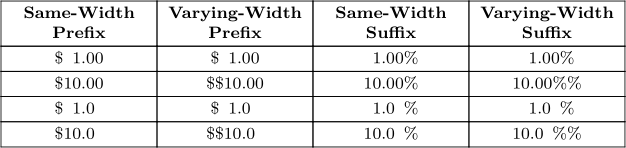
In the above example the "varying-width" columns do not align on the alignment character. For these cases the "text" method is provided. The logic simpler—it does not attempt to pad space in-between the number and any preceding or trailing text, so the text will always align on the alignment character, but forgoes the attempt to vertically align preceding and trailing text. This is the default mode for the "-" separator, but can be forced by specifying alignmentcharacter={text->.}. The below example shows that all four columns align on the ".", but the "$" and "%" are no longer stacked.
-
% mode=mkiv \setuppapersize[A5] \bTABLE \setupTABLE[c][1,2,3,4][alignmentcharacter={text->.},aligncharacter=yes,align=middle] \bTABLEhead \bTR \bTH Same-Width Prefix \eTH \bTH Varying-Width Prefix \eTH \bTH Same-Width Suffix \eTH \bTH Varying-Width Suffix \eTH \eTR \eTABLEhead \bTABLEbody \bTR \bTD \$1.00 \eTD \bTD \$1.00 \eTD \bTD 1.00\% \eTD \bTD 1.00\% \eTD \eTR \bTR \bTD \$10.00 \eTD \bTD \$\$10.00 \eTD \bTD 10.00\% \eTD \bTD 10.00\%\% \eTD \eTR \bTR \bTD \$1.0 \eTD \bTD \$1.0 \eTD \bTD 1.0\% \eTD \bTD 1.0\% \eTD \eTR \bTR \bTD \$10.0 \eTD \bTD \$\$10.0 \eTD \bTD 10.0\% \eTD \bTD 10.0\%\% \eTD \eTR \eTABLEbody \eTABLE
-

Entering \nocharacteralign disables character alignment in a cell.
Specifying the cell column
When writing a table you can omit empty cells and define only cells for specified columns. To have this feature fully available you need to have a beta or a quite fresh ConTeXt version.
Two methods are available:
- With the TD "n" option, the undefined cells are merged into a single spanned cell.
- With the TD "m" option, the undefined cells appear as empty normal cells.
Here is an example using the "n" option:
-
\setuppapersize[A5] \bTABLE[width=3em] \bTR\bTD d1 \eTD\bTD[n=2] d2 \eTD\bTD[n=5] d5 \eTD\bTD[n=7] d7 \eTD\eTR \bTR\bTD f1 \eTD\bTD[n=4] f4 \eTD\bTD[n=5] f5 \eTD\bTD[n=7] f7 \eTD\eTR \eTABLE
- 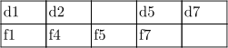
Here is an example using the "m" option:
-
\setuppapersize[A5] \bTABLE[width=3em] \bTR\bTD d1 \eTD\bTD[m=2] d2 \eTD\bTD[m=5] d5 \eTD\bTD[m=7] d7 \eTD\eTR \bTR\bTD f1 \eTD\bTD[m=4] f4 \eTD\bTD[m=5] f5 \eTD\bTD[m=7] f7 \eTD\eTR \eTABLE
-

Round corners
For a different approach for round corners and colored background follow the text after this example.
It is possible to round the corners of the table if you turn off the main frame of the table and frame the table in \framed. Compare two different approaches in the first and second example.
You can't color the background of the table with round corners unless the frame rulethickness is not big enough to cover the rectangular corners of the background (second example). Well, you can if you frame the table twice. Once in the thick white frame and then in the thin frame with negative offset and slightly smaller corner radius (third example). Be aware of other complications -- notice that the thick white frame is still visible in the text above it.
-
\starttext \setupcolors[state=start] %\showstruts \setupTABLE[background=color,backgroundcolor=yellow] \setupframed[framecolor=darkgreen] \defineparagraphs[ThreeCols] \startThreeCols First \def\StartTable {\setupTABLE[row] [first][topframe=off]% \setupTABLE[row] [last] [bottomframe=off]% \setupTABLE[column][first][leftframe=off]% \setupTABLE[column][last] [rightframe=off]% \framed[strut=no,corner=round,offset=.5\linewidth] \bgroup} \def\StopTable {\egroup} \StartTable \bTABLE \bTR \bTD test \eTD \bTD test \eTD \eTR \bTR \bTD test \eTD \bTD test \eTD \eTR \bTR \bTD test \eTD \bTD test \eTD \eTR \eTABLE \StopTable \nextThreeCols Second \setupTABLE[row] [first][topframe=off] \setupTABLE[row] [last] [bottomframe=off] \setupTABLE[column][first][leftframe=off] \setupTABLE[column][last] [rightframe=off] \framed[strut=no,corner=round,offset=.5\linewidth,,rulethickness=1mm]\bgroup \bTABLE \bTR \bTD test \eTD \bTD test \eTD \eTR \bTR \bTD test \eTD \bTD test \eTD \eTR \bTR \bTD test \eTD \bTD test \eTD \eTR \eTABLE \egroup \nextThreeCols Third \setupTABLE[row] [first][topframe=off] \setupTABLE[row] [last] [bottomframe=off] \setupTABLE[column][first][leftframe=off] \setupTABLE[column][last] [rightframe=off] \framed[strut=no,corner=round, radius=1.4mm,offset=-1mm,,rulethickness=.1mm]\bgroup \framed[strut=no,corner=round, radius=1.5mm,offset=0mm,,rulethickness=1mm,framecolor=white]\bgroup \bTABLE \bTR \bTD test \eTD \bTD test \eTD \eTR \bTR \bTD test \eTD \bTD test \eTD \eTR \bTR \bTD test \eTD \bTD test \eTD \eTR \eTABLE \egroup \egroup \stopThreeCols \stoptext
From 2006-10-11 on, ConTeXt contains one more mechanism for round corners. Watch the example:
-
\setuppapersize[A5] \starttext \setupcolors[state=start] \setupTABLE [y] [first][background=color,backgroundcolor=blue,frame=off,bottomframe=on,topframe=on,framecolor=white] \setupTABLE [first][first][backgroundcorner=2,corner=10,frame=on] \setupTABLE [last] [first][backgroundcorner=4,corner=12,frame=on] \setupTABLE [row] [each] [background=color,backgroundcolor=blue,frame=on,framecolor=white] \setupTABLE [first][2] [corner=8] \setupTABLE [last] [2] [corner=5] \setupTABLE [first][last] [corner=7] \setupTABLE [last] [last] [corner=6] \bTABLE[frame=off,align=middle] \bTR \bTD one \eTD \bTD two \eTD \bTD three \eTD \eTR \bTR \bTD first \eTD \bTD second \eTD \bTD third \eTD \eTR \bTR \bTD alpha \eTD \bTD beta \eTD \bTD gamma \eTD \eTR \eTABLE \stoptext
Other options
Some other useful options that were not covered above:
- align=yes will align the text both left and right justified
- loffset , roffset , toffset , boffset can be used in addition to offset to specify cell content offsets in each direction separately, see also \framed
Rotated headline
Sometimes you have table cells that are rather short but headings that are rather long. In this case it could make sense to rotate the headings. With a rotation other than 90°, it additionally makes sense to let the heading overlap (so push the cells back together). This is either possible with MetaPost or TeX primitives (Source).
MetaPost solution
-
\startuseMPgraphic{tableheader}{text,rotation} label.lft("\strut\bf\MPvar{text}",origin) rotated \MPvar{rotation} shifted (\the\strutht,0); setbounds currentpicture to unitsquare xyscaled(\the\struttotal,abs(sind(\MPvar{rotation}))*\the\widthofstring{\MPvar{text}}); \stopuseMPgraphic \bTABLE[frame=off] \bTR[align={middle,low}] \bTH \eTH \bTH[width=3em] \dontleavehmode\useMPgraphic{tableheader}{text=Water buffalo,rotation=320} \eTH \bTH[width=3em] \dontleavehmode\useMPgraphic{tableheader}{text=Mexican redknee tarantula,rotation=320} \eTH \bTH[width=3em] \dontleavehmode\useMPgraphic{tableheader}{text=European turtle dove,rotation=320} \eTH \eTR \bTR[topframe=on,align=middle] \bTD Amount of legs \eTD \bTD 4 \eTD \bTD 8 \eTD \bTD 2 \eTD \eTR \eTABLE
- 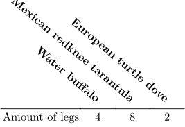
Solution with TeX primitives
-
\bTABLE[frame=off] \bTR[align={middle,low}] \bTH \eTH \bTH \dontleavehmode\kern1.5em\llap{\rotate[rotation=320]{\strut Water buffalo}} \eTH \bTH \dontleavehmode\kern1.5em\llap{\rotate[rotation=320]{\strut Mexican redknee tarantula}} \eTH \bTH \dontleavehmode\kern1.5em\llap{\rotate[rotation=320]{\strut European turtle dove}} \eTH \eTR \bTR[topframe=on,align=middle] \bTD Amount of legs \eTD \bTD[width=3em] 4 \eTD \bTD[width=3em] 8 \eTD \bTD[width=3em] 2 \eTD \eTR \eTABLE
- 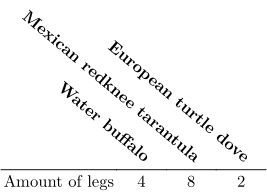
Breakdown:
-
\dontleavehmodesays ConTeXt/TeX to stay in horizontal mode for the cell. -
\kern1.5emadds a non breakable space of 1.5em, adjust this to adjust the cell width. -
\llapsays ConTeXt/TeX to assume for all content within a width of 0 and put the content to the left of the current position. -
\rotatedo the actual rotation, see Command/rotate . -
\strutadds a vertical box of the maximal height text could have so all text is typeset to the correction position.
TABLEs with old table syntax
From the mailing list in March 2009, by Wolfgang Schuster and Hans Hagen:
\def\startTABLE {\dosingleempty\dostartTABLE} \def\dostartTABLE[#1]% {\bgroup \bTABLE[#1]% \let\NC\doTABLENC \let\NR\doTABLENR \let\bTR\relax \let\bTD\relax \let\bTH\relax \let\bTN\relax} \def\stopTABLE {\eTABLE \egroup} \newconditional\inTABLEnc \unexpanded\def\doTABLENR {\eTR \setfalse\inTABLEnc} \unexpanded\def\doTABLENC {\futurelet\next\dodoTABLENC} \def\dodoTABLENC {\ifx\next\doTABLENR \else \expandafter\dododoTABLENC \fi} \long\def\dododoTABLENC#1\NC {\ifconditional\inTABLEnc\else\settrue\inTABLEnc\parseTR[][]\fi \dodoubleempty\parseTD#1\eTD\NC}
This is now part of the core as the NTE module. Quoting its internal documentation:
This module is suggested by Wolfgang Schuster who also prototyped it and came up with the rationale:
This module provides an easy way to use natural in a similiar way as the older table module (based on the TABLE macros) and the newer tabulate module.
You can see the advantage in the following table, once created with the new macros and once with the normal macros provided with the natural table module.
Let us start with the original macros:
\bTABLE \bTR \bTD Text 1 \eTD \bTD Text 2 \eTD \eTR \bTR \bTD Text 3 \pasteeTD \bTD Text 4 \eTD \eTR \eTABLE
Watch how the new macros use less code:
\startTABLE \NC Text 1 \NC Text 2 \NC\NR \NC Text 3 \NC Text 4 \NC\NR \stopTABLE
The actual code differs from the prototype that it does not need to collect whole rows and parse them but looks ahead instead.
Get current row/column number
See for example here: Command/currentTABLErow tt>\bTD
An alignment issue
In some cases the alignment of cell contents may not behave as you might expect. Here is an illustrative example. The following code
-
\define[3]\Glyphbox {\framed[frame=on,align=middle]\bgroup #1\\ #2\\ #3% \egroup} \starttext \setupTABLE[frame=on,align=middle] \bTABLE \bTR \bTD \Glyphbox{I}{a}{1} \eTD \bTD \Glyphbox{I}{a}{1} \eTD \eTR \bTR \bTD \Glyphbox{III}{aaa}{111} \eTD \bTD \Glyphbox{III}{aaa}{111} \eTD \eTR \eTABLE \stoptext
gives us:
Note that in the first row the cells are not middle-aligned. As Wolfgang Schuster pointed out on the list, we need *two* things to fix this:
1. You need \dontleavehmode in front of the \framed.
2. You need \setupTABLE[start][..,..=..,..] because \bTABLE sets a default value for the align key which can’t be overwritten with a simple \setupTABLE[..,..=..,..].
Implementing this
-
\define[3]\Glyphbox {\dontleavehmode \framed[frame=on,align=middle]\bgroup #1\\ #2\\ #3% \egroup} \starttext \setupTABLE[start][frame=on,align=middle] \bTABLE \bTR \bTD \Glyphbox{I}{a}{1} \eTD \bTD \Glyphbox{I}{a}{1} \eTD \eTR \bTR \bTD \Glyphbox{III}{aaa}{111} \eTD \bTD \Glyphbox{III}{aaa}{111} \eTD \eTR \eTABLE \stoptext
we now get the following correct output with centered cells in the first row:
Footnotes in TABLEs
From this conversation on the mailing list[2]. In order to get global footnotes printing after tables (without using the local footnotes trick):
Text\footnote{Normal Footnote} \bTABLE[split=repeat,align=normal] \bTR\bTD Something\postponenotes\footnote[x]{bla bla}\eTD\eTR \bTR\bTD Foo\note[x] \eTD\eTR \eTABLE \flushnotes More Text\footnote{Another Normal Footnote}
Settings for multiple TABLEs in a single page
Please note that if you have multiple TABLEs in a single page, use the \start & \stop commands to ensure the locality of the attributes of each table. Else settings from one TABLE might have strange effects on the settings of another.
When you need a certain setup for multiple tables you can put all \setupTABLE commands in a setups-environment and load these settings at the start of the table, e.g.
\startsetups [tablesettings] \setupTABLE [r] [1] [..,..=..,..] \setupTABLE [c] [2] [..,..=..,..] \stopsetups \bTABLE[setups=tablesettings] ... \eTABLE
When you need individual settings for each table add \start before the setup-commands and \stop after the table, this keeps all setups local to the current table, e.g.
\start \setupTABLE [r] [1] [..,..=..,..] \setupTABLE [c] [2] [..,..=..,..] \bTABLE ... \eTABLE \stop
Creating tables from CSV data (Comma Separated Values)
Beware, this is very old code; while it might still work (untested), it makes more sense to do data processing with Lua.
See also the database module!
and Creating Tables using CSV (Comma-separated values) by Mojca Miklavec
An interesting example of creating a table using comma separated values was posted to the mailing list in 2005 by Christopher Creutzig
The following macros take care of processing CSV data:
% Iterate over all the lines of text captured with \obeylines active % command to call is first argument, is not called for empty lines \bgroup \obeylines \gdef\ProcessLines#1#2{\doProcessLines{#1}#2^^M\doProcessLines}% \gdef\doProcessLines#1#2^^M#3\doProcessLines{% \doifnotempty{#2}{#1{#2}}% \doifnotempty{#3}{\doProcessLines{#1}#3\doProcessLines}% }% \egroup \def\startCSV{\bgroup\obeylines\dostartCSV}
The next lines are an example of transforming the data into a natural table, but can be easily adapted to any type of the table or perhaps (mis)used in even more strange ways:
\def\TBLentry#1{\bTD#1\eTD} \def\TBLline#1{\bTR\processcommalist[#1]\TBLentry} \def\dostartCSV#1\stopCSV{% \bTABLE \ProcessLines\TBLline{#1}% \eTABLE \egroup }
The following lines will then finally result in a desired table:
% some additional settings for the table may be made as well \setupTABLE[c][2][style=\tt] \setupTABLE[c][3][align=middle] \setupTABLE[r][1][style=bold] % how to override the \tt in the second column? \startCSV Name,Email,Accepted \CONTEXT,worth@trying.to,Yes Hans,main@developer.of,Yes Bug,get@rid.of,No \stopCSV
- 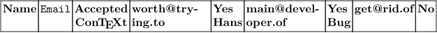
Some remarks: the (tentative) code ignores the fact that
- csv data may optionally be enclosed in "" quotes that have to be removed (to be done in \TBLentry)
- quoted strings may contain commas themselves (which means writing a custom version of \processcommalist instead).
See also \processseparatedlist.